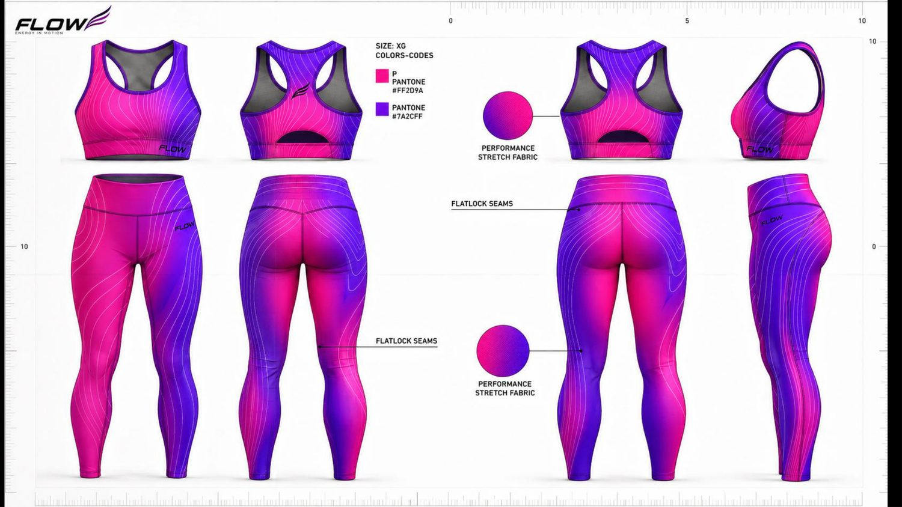
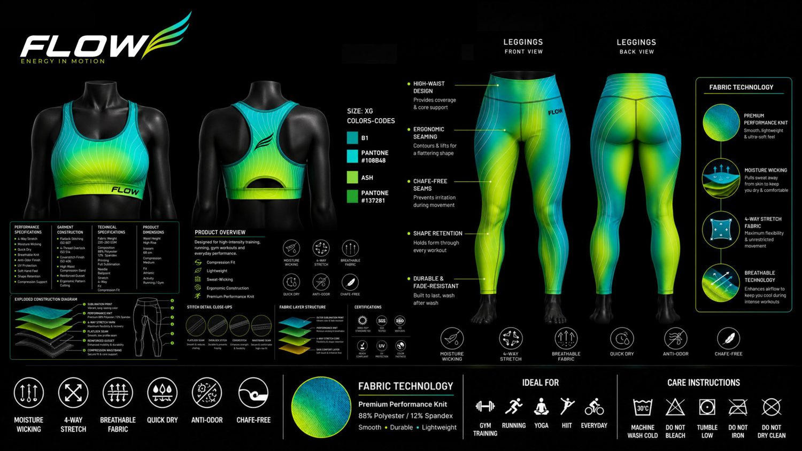
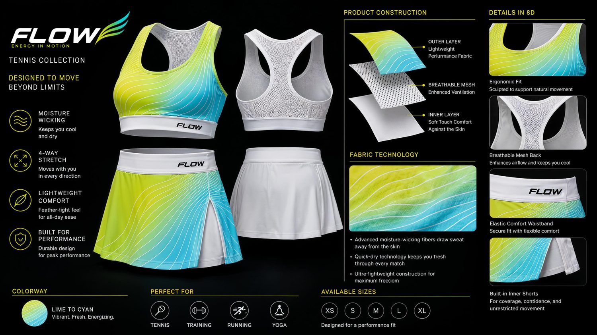

FLOW · Energy in Motion
قراءة كاملة للـ31 صفحة في FLOW.pdf: جرد كل الموديلات واللونيات، المواصفات المستخرجة من التك-باك، خلل واحد يجب إصلاحه قبل مخاطبة أي مصنع، قائمة مصانع مرشّحة، ورسالة طلب تسعير جاهزة.
جرد الملف
العرض ليس مجموعة ملابس واحدة — هو نظام علامة كامل يضمّ خمسة منتجات في خمس سلاسل توريد مختلفة. هذا الجرد يحدّد ما يخصّ سؤالك عن مصانع الملابس، وما لا يخصّه.
| المنتج | القطع | اللونيات | الصفحات | جاهزية التصنيع |
|---|---|---|---|---|
| ملابس — هذا ما تسأل عنه | ||||
| طقم التدريب | برا رياضية + ليقنز عالي الخصر | 4 | 4، 9، 15–18 | تك-باك كامل بخياطات ISO ومقاسات وشهادات |
| مجموعة التنس | برا بظهر شبكي + سكورت بشورت داخلي | 2 | 19–22 | وصف بناء وطبقات، بلا رسومات مسطّحة ولا أكواد خياطة |
| ليست ملابس — مصانع أخرى تماماً | ||||
| قنينة FLOW | ستانلس مفرّغ 750 مل و1 لتر، LED، USB-C، تطبيق | — | 25–28 | مصنع معادن وإلكترونيات |
| حذاء FLOW R1 | شبك جاكار، EVA/PEBA، مقاسات 36–46 يونيسكس | 4 | 29 | مصنع أحذية — قالب واحد بآلاف الدولارات |
| جوارب AIRKNIT | 3 ارتفاعات، مقدّمة بلا خياطة، خيط أيون فضي | 4 | 30 | مصنع جوارب بحياكة دائرية |
الصفحات 23 و28 و31 فارغة تماماً (صفر صور). الصفحات 1–8 و10–14 و24 حملات تسويقية بلا مواصفات.
اللونية الزرقاء ظهرت في صورة حملة واحدة بلا رسم مسطّح ولا أكواد لون — فهي ليست جاهزة للتصنيع. والأبيض بخطوط ليموني وسماوي تحدٍّ مختلف: خطوط رفيعة على أرضية بيضاء، لا تدرّج. الأبيض يكشف كل عيب في القصّ والخياطة، والخطوط الرفيعة تحتاج دقّة تسجيل أعلى من التدرّج.

أوقف كل شيء
أصلح هذا قبل مخاطبة أي مصنع
العرض يطلب دقّة لون عند ΔE ≤ 2.0 — وهذا سماح صارم. لكنه لا يعطي أي كود Pantone حقيقي يحقّقه.
ما في الملف مكتوب هكذا، وهو غير قابل للتنفيذ:
| الصفحة | ما هو مكتوب | المشكلة |
|---|---|---|
| 9 | PANTONE #FF2D9A PANTONE #7A2CFF | هذه أكواد HEX للشاشات، لا أكواد Pantone. كلمة PANTONE قبلها لا تجعلها كذلك. |
| 15، 18 | PANTONE #108B48 PANTONE #137281 | أكواد HEX أيضاً. ولونها الفعلي أخضر داكن ورمادي مزرقّ — لا يطابق المربّعات السماوية والليمونية المعروضة بجانبها. |
| 17 | Pantone 108848 Pantone 137281 | نفس الأرقام بلا # وبرقم مختلف في الأول. ثلاث صفحات، ثلاث صيغ. |
لماذا يهمّ: المصنع يصبغ ويطبع على قماش، لا على شاشة. كود HEX لا يُترجم إلى صبغة، والفرق بين ما تراه على شاشتك وما يخرج من المطبعة قد يتجاوز ΔE 10. ولو أرسلت الملف كما هو، فستحصل على أحد جوابين: إمّا سؤال يعيدك إلى الصفر، أو — وهو الأسوأ — إنتاج بلون اجتهده المصنع بنفسه.
خلل أصغر في نفس السياق: الرسومات المسطّحة مكتوب عليها SIZE: XG بينما جدول المقاسات XS–XL. وحّدهما قبل الإرسال — الرسم المسطّح يُقاس عليه الباترون.
الخلاصة
مصنع قصّ وخياطة للملابس الأدائية، عنده طباعة تصعيدية كاملة داخلية.
التك-باك يحسم الأمر: Flatlock ISO 607 وOverlock ISO 514 وCoverstitch ISO 406. هذه خياطة قطع مقصوصة — وليست حياكة Seamless. فكل مصانع الـSeamless التي تعمل بمكائن Santoni الدائرية خارج الحسبة، مهما مدحوا أنفسهم.
والفلتر الثاني أهمّ: التك-باك ينصّ على أن الطباعة تُطبع على الأقمشة قبل القصّ والخياطة، بتدرّج متصل عبر القطع. هذا يستبعد أي مصنع يُرسل الطباعة لمقاول خارجي — لأن محاذاة التدرّج عبر الدرزات، ودقّة اللون، تنهاران حين يمرّ العمل بورشتين.
سؤالك الأول لأي مصنع: هل الطباعة التصعيدية داخل مصنعكم أم عند مقاول؟ إن كانت عند مقاول، أغلق المحادثة.
ما ينصّ عليه الملف
مجمّعة من صفحات 4 و15 و16 و17. لا تحتاج إعادة كتابة — المصنع يقرأها كما هي.

القطعة الثانية
برا بظهر شبكي وسكورت بشورت داخلي مدمج. نفس القماش ونفس نوع المصنع، لكنها تضيف قدرتين اسأل عنهما تحديداً:
لاحظ أن مجموعة التنس ليس لها رسومات مسطّحة ولا أكواد خياطة في العرض — فهي أقل جاهزية من طقم التدريب. ابدأ بالطقم الأول، واذكر التنس في طلب التسعير فقط: المصنع الذي لا يستطيع عملها يستبعد نفسه مبكّراً ويوفّر وقتك.

مرشّحون
اقرأ هذا قبل الجدول
شبكتي هنا منعتني من فتح مواقع هذه المصانع، فلم أتحقق من أيٍّ من الأرقام أدناه بنفسي. وأغلب صفحات «أفضل ١٠ مصانع» على الإنترنت محتوى تسويقي يكتبه وكلاء توريد يربحون من إحالتك.
تعامل مع الجدول كقائمة أسماء للتحقق، لا كتوصية. خطوات التحقق في آخر الصفحة.
| المصنع | الحد الأدنى المُعلَن | لماذا هو مرشّح لـ FLOW |
|---|---|---|
| البرتغال — جودة أوروبية، كميات صغيرة | ||
| E3plus | 100 / موديل | رياضي تقني، وعنده طباعة تصعيدية صراحةً. الأقرب لمواصفاتك في أوروبا. |
| White Cotton | 50 / موديل | باركيلوس. أقل حدّ أدنى وجدته في أوروبا، وأقمشة OEKO-TEX. |
| Athleisure Basics | 70 / موديل | أثليجر لعلامات أوروبية. «صُنع في البرتغال» يرفع قيمة العلامة. |
| تركيا — الأقرب شحناً للرياض | ||
| Conbello | مرن | متخصص تحديداً في الليقنز والبرا — أي في منتجك نفسه. |
| Last Textile | 100 / موديل | إستنبول. شحن قصير للخليج وتسليم أسرع من آسيا. |
| AEM Textile | — | 15+ سنة في الملابس الرياضية لعلامات أوروبية وبريطانية. |
| باكستان والصين — الأقلّ كلفة عند التوسّع | ||
| Linushi | 30 / موديل | يذكر أطقم برا+ليقنز من صبغة واحدة — مهم لتطابق التدرّج بين القطعتين. |
| Zega Apparel | ~50 / تصميم | كراتشي. قصّ وخياطة + طباعة تصعيدية بحدّ أدنى منخفض. |
| YOUMEGA | 300–500 / لون | حدّ أدنى أعلى، لكن يدعم توثيق OEKO-TEX 100. |
| الصف الأول — للتوسّع لاحقاً، لا للبداية | ||
| Eclat Textile | مرتفع جداً | تايوان وفيتنام. يورّد Nike وLululemon وUnder Armour. ينسج أقمشته بنفسه — تكامل رأسي يعني تحكّماً كاملاً باللون. لن يقبلك بكمية صغيرة، لكن اعرف أن هذا هو السقف. |
| Makalot | مرتفع جداً | رياضي أدائي لـ Nike وUA وLululemon. |
ملاحظة على الأرقام: الحدّ الأدنى المُعلَن للّيقنز العادي لا ينطبق على الطباعة الكاملة. القاعدة الشائعة في الطباعة التصعيدية هي 200 قطعة لكل تصميم طباعة، لأن الطباعة تتم على الأقمشة قبل القصّ. اسأل عن الحدّ الأدنى للطباعة لا للخياطة — وعندك أربع لونيات، أي أربعة تصاميم طباعة.
الفخّ
حزام الجاكار المخصّص بعرض 4 سم يُصنع عند مورّد تريمات منفصل، وحدّه الأدنى يُقاس بالأمتار: من 100 إلى 1000 متر للّون الواحد، بسعر 0.30–0.50 دولار/متر.
احسبها: الطقم الواحد (حزام ليقنز + حزام برا) يستهلك نحو 1.5 متر. فلو كان حدّ المورّد 500 متر، فأنت ملزَم بشراء ما يكفي لـ ~330 طقماً — حتى لو وافق المصنع على خياطة 50 فقط.
هذا هو الرقم الذي يحدّد حجم طلبتك الأولى، لا الحدّ الأدنى للمصنع. اسأل عنه في أول رسالة. ولك مخرجان إن كان كبيراً: أن يورّده المصنع من مخزونه بشعارك ضمن دفعة مشتركة، أو أن تبدأ بحزام سادة وتؤجّل الجاكار للطلبية الثانية.
نفس المنطق ينطبق على شعار الـTPU العاكس والليبل المنسوج وتشطيبَي مقاومة الرائحة والأشعة — كلٌّ منها من مورّد مستقل بحدّ أدنى مستقل.
جاهزة للإرسال
بالإنجليزية، وفيها كل مواصفة في التك-باك. أرسلها كما هي لكل مصنع في القائمة وقارن الردود. الأسئلة العشرة في آخرها هي التي تكشف المصنع الجادّ من الوسيط.
Subject: RFQ - Women's Sports Bra + Legging Set, All-Over Sublimation, 88/12 Poly-Spandex
Hello,
We are FLOW, a women's activewear brand preparing our first production run.
We are looking for a cut-and-sew manufacturer with IN-HOUSE all-over
sublimation printing. A full tech pack with flats, callouts and construction
diagrams is available on request.
PRODUCT
Style 1 Women's sports bra - racerback, breathable mesh back panel,
removable molded cups
Style 2 Women's high-rise leggings - full length, reinforced gusset
Style 3 (phase 2) Tennis skort with built-in inner shorts,
plus mesh-back bra
FABRIC
Composition 88% polyester / 12% spandex
Weight 220-260 GSM
Structure Circular performance knit, 4-way stretch
Layers Outer sublimation print / performance knit /
4-way stretch core / skin comfort layer
Finishes Matte, anti-gloss, anti-pilling, moisture-wicking,
quick-dry, ANTI-ODOR, UV PROTECTION, shape retention
PRINT
All-over sublimation, printed on panels BEFORE cutting and sewing.
Continuous gradient across panels - print alignment across seams
is required.
Colourways 4 in total (lime/cyan, pink/purple, royal blue,
white with lime + cyan lines)
Tolerance Delta-E <= 2.0
NOTE: we will supply Pantone TCX references and a dyed fabric swatch
for each colourway. Please confirm you match to TCX, not to screen values.
CONSTRUCTION
4-thread overlock (ISO 514) principal seams, elastic underband
Coverstitch (ISO 406) neckline, armhole binding, underband topstitch
Flatlock (ISO 607) racerback and throughout leggings, chafe-free
High-waist compression band. Reinforced gusset. Ergonomic pattern cutting.
Ballpoint needle. No zippers, no buttons, no interfacing.
DIMENSIONS
Inseam 68 cm. High rise. Medium compression. Athletic fit.
TRIMS
4 cm custom jacquard elastic waistband + bra underband (logo woven in)
Reflective black TPU heat-transfer logo, 35 mm wide,
applied at 150 C / 12-15 s / medium pressure
Woven main neck label; sublimated satin care label
Removable molded foam cups, inserted via internal pocket
Colour-matched high-stretch polyester thread
SIZES
XS (32-34) S (34-36) M (36-38) L (38-40) XL (40-42)
CERTIFICATIONS REQUIRED
OEKO-TEX Standard 100, REACH compliant, AZO-free dyes.
ISO 9001:2015 for the facility. Please send certificate numbers, not logos.
If you claim UV protection, we need a UPF test report with a rating.
PACKAGING
Recyclable polybag, paper hang tag, thank-you card, export carton.
PLEASE QUOTE
1. MOQ per style, per colourway, and the size ratio you require
2. MOQ per PRINT DESIGN (not per style) - we have 4 colourways
3. FOB price per piece at 100 / 300 / 1000 pcs per style
4. Sampling cost and lead time (proto, fit, PP sample)
5. Bulk lead time after PP approval
6. Is sublimation printing in-house or subcontracted?
7. Your lab dip / strike-off process, and how you hold Delta-E <= 2.0
8. Price impact of the reinforced gusset and the mesh back panel
9. Can you supply the 4 cm jacquard elastic, and at what MOQ in metres?
10. Anti-odor and UV finishes: cost, minimum, and which treatment you use
11. Shipping terms and transit time to Riyadh, Saudi Arabia
Thank you,
[your name] - FLOW
غيّر [your name] فقط. لا تحذف السؤال السادس ولا التاسع — هما الأهمّ.
قبل أن تدفع
أيّ أحد يضع شعار OEKO-TEX على ملف PDF. الرقم وحده يُفحص، على oeko-tex.com/label-check. ولو ادّعوا GRS أو GOTS، افحصهم في سجل Textile Exchange.
هذا السؤال وحده يصفّي نصف القائمة. الطباعة الخارجية تعني هامشين إضافيين، وفقدان التحكّم بمحاذاة التدرّج ودقّة اللون.
قطعة قماش مطبوعة بتدرّجك قبل خياطة أي شيء. أرخص اختبار ممكن، ويكشف فوراً إن كانوا يصلون إلى ΔE ≤ 2.0.
لا تطلب إنتاجاً قبل أن تمسك بيدك برا وليقنز مخيطَين. افحص محاذاة التدرّج عند الدرزات تحديداً — هنا يفشل المصنع الضعيف.
الفلاتلوك موجود ليمنع الاحتكاك، والليقنز يجب ألّا يصبح شفّافاً عند القرفصاء. اختبر الاثنين على العيّنة قبل الاعتماد.
لولوليمون تنشر قائمة مصانعها بالأسماء والعناوين. مصنع مذكور في قائمة علامة كبيرة = دليل مستقل، لا إعلان.